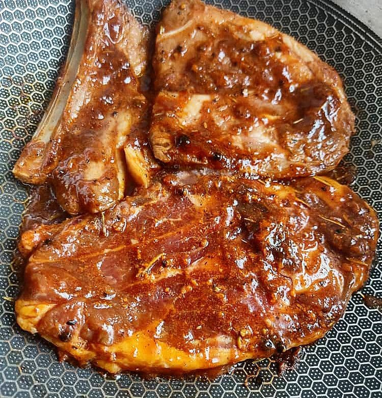

Kambing

Description
Ingredients
- 2 goat steaks, about 1 inch thick each
- 1 cup sheep's milk yoghurt
- 4 medium gloves garlic, minced
- 2 packed tablespoons fresh oregano, chopped
- plenty of sea salt and freshly cracked pepper
Steps
- Season the goat with salt and pepper, being sure to rub it in very well.
- Combine the yoghurt, garlic, and oregano and add this to the goat, again, rubbing it in very well. Allow it to sit overnight.
- Heat your cast iron skillet to medium-high heat and add a small amount of vegetable oil.
- Cook the steaks quickly – about 2 minutes per side. Goat can dry out very quickly (as I have learned) so watch it closely and don’t hesitate to take it off the heat if you think it is drying too much. You are probably right.
- Remove from heat and tent with foil for a few minutes before serving.